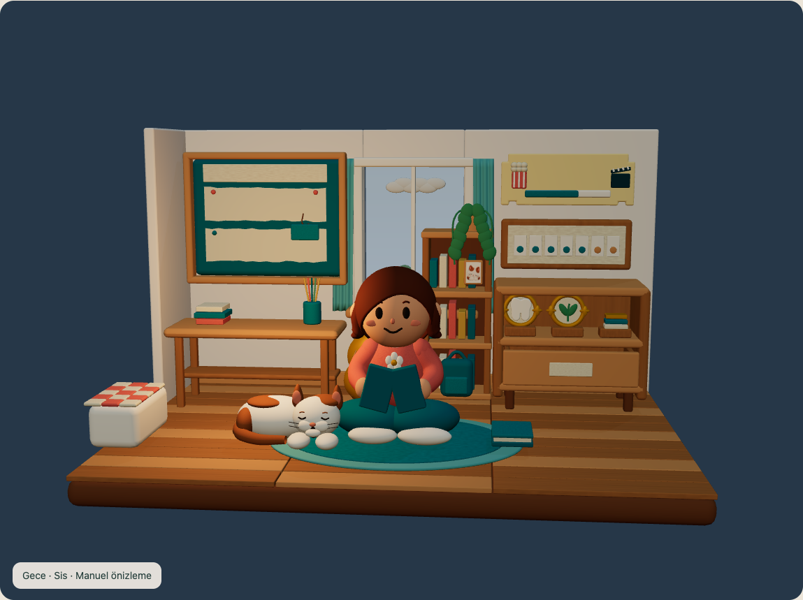

24 gerçek WebGL görünümü. Güneş/ay, ufuk ışığı, gölgeler ve dış hava aynı sahnede değişir. Seçimler manuel; gerçek konum veya hava servisi bağlı değil.
Açık
Bulutlu
Yağmur
Kar
Rüzgâr
Sis
Gün doğumu · SisGündüz · SisGün batımı · Sis
Gece · Sis